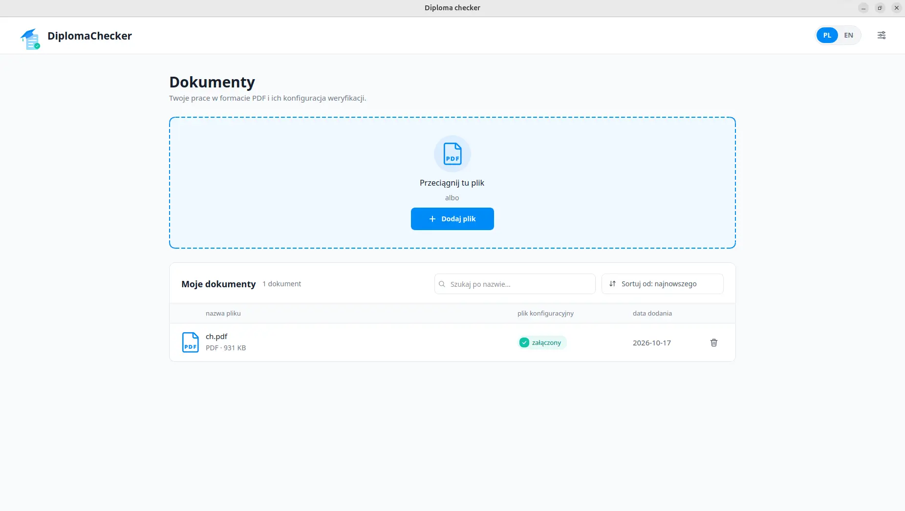

Pobierz DiplomaChecker
Aplikacja desktopowa do sprawdzania prac dyplomowych w formacie PDF. Wybierz system i wersję.
Instalacja
Przykładowe wymagania formalne
-
JSON Pobierz JSON
Praca inżynierska
-
JSON Pobierz JSON
Praca magisterska
